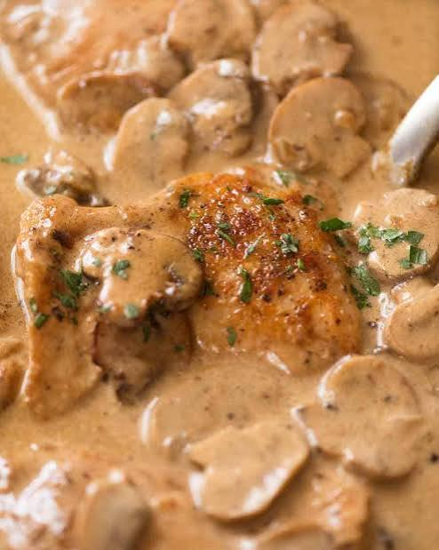

Slow Cooker Chicken Stroganoff

Description
Slow Cooker Chicken Stroganoff is a creamy and comforting
chicken dish that is easy to prepare. The chicken is slowly
cooked with butter and seasoning until tender.
Cream of chicken soup and cream cheese are added near the end
to create a rich and creamy sauce. It can be served over pasta
or rice.
Ingredients
- Boneless, skinless chicken breasts
- Butter
- Dried Italian-style salad dressing mix
- Cream of chicken soup
- Cream cheese
Steps
- Cut the chicken breasts into cubes.
- Place the chicken, butter, and Italian-style dressing mix into the slow cooker.
- Mix the ingredients together.
- Cook on low for about 5 to 6 hours.
- Add the cream of chicken soup and cream cheese.
- Stir everything together until well combined.
- Cook on high for about 30 more minutes until the sauce is creamy and heated through.
- Serve over pasta or rice.
Home